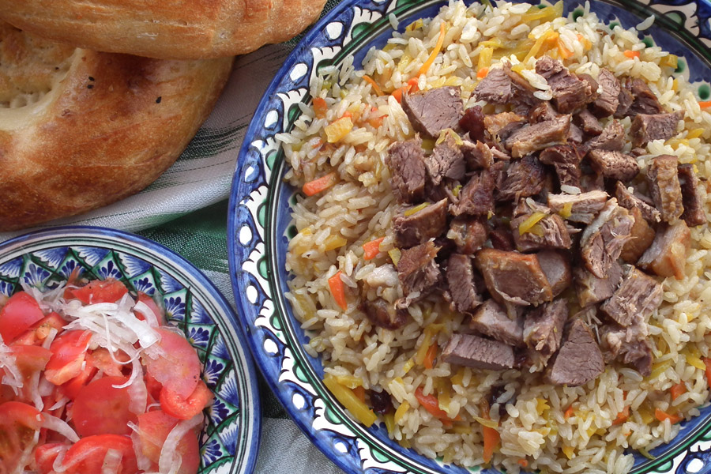

Uzbek Mastava "Soup"
Price: 10,000 sums
Price: 10,000 sums

Mastava is one of the delicios soups in Uzbek culture. Once taste it, you will love it
Khanum
Price:4,000 sums(per piece)
Price:4,000 sums(per piece)
Delicious Meat and potato wrapped in to the dough.
Lasagne
Price:12,000 sums
Price:12,000 sums

Lasagne - pasta in the form of a square or rectangle.It called also as lazanya al forno - is a dish of Italian cuisine, traditionally prepared from such sheets, mixed with layers of stuffing on the basis of stew with minced meat, poured with bechamel sauce and sprinkled with Parmesan cheese.
Sea bass
Price: 39,500 sums
Price: 39,500 sums

Backed, grilled or pan-fried Sea Bass is the perfect option for dinner, party dish or just for family dinner.
Uzbek Plov
Price: 18,000 sums

Price: 18,000 sums
National Uzbek dish. Alsmot every one who tastet pilof they love it.Try it and see yourself.
Steak
Price: 45,000sums
Price: 45,000sums

Delicious steakes from popular cheff Nusret Gokce. We will give you an opportunity to taste it in our restaurant.
Beef Wellington
Price: 35,000
Price: 35,000
Have you know that this is Gordon Ramsays favorite food?. In our restaurant you can feel yourself as Gordon Ramsay.